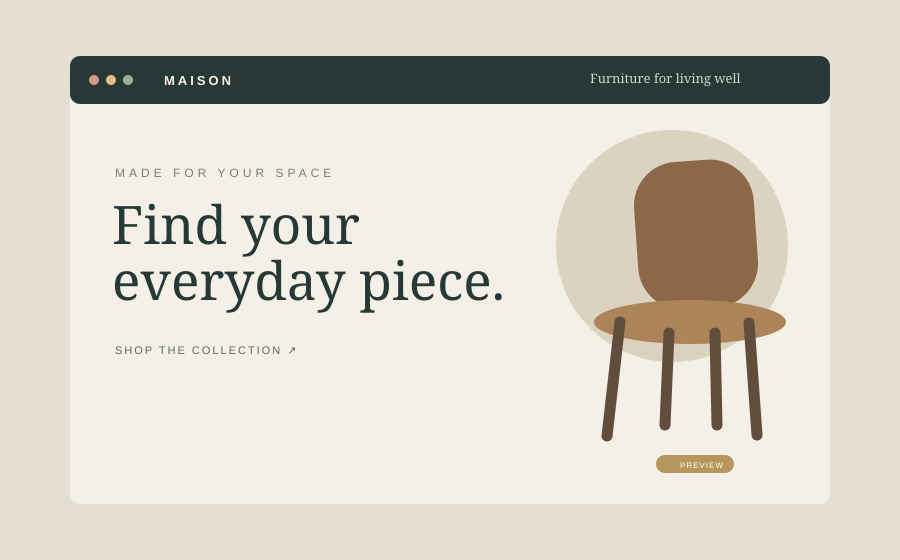

Salon appointment management
Grace Beauty
Customers request a salon service and preferred appointment time; an administrator can assign a salonist.
Project overview illustration
PHPMySQLHTMLTailwind CSS
Selected work
These projects are included because they are my work and have a public repository. Descriptions below match the repository and available live sites.
Salon appointment management
Customers request a salon service and preferred appointment time; an administrator can assign a salonist.
Project overview illustration

Furniture storefront
A furniture storefront with a product catalogue, category filters, and product detail page.
Project overview illustration

Hospital information website
A hospital information website with service, doctor, and contact pages.
Project overview illustration
Each project page lists its purpose, verified features, technologies, my role, and available project links.